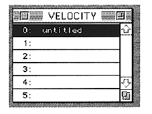
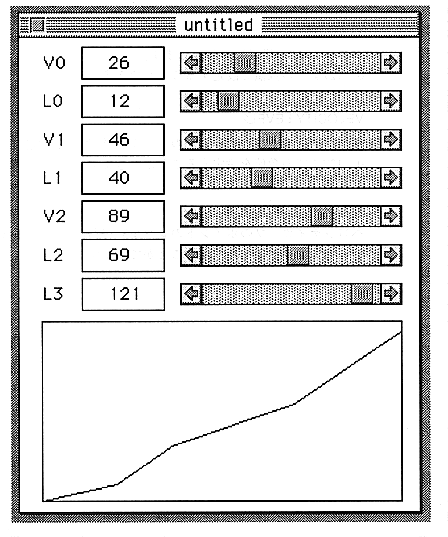

Return to previous page ｜ Return to menu ｜ Go to next page
-
Velocity window

You can change the name of Velocity. You can also double-click on the left of the name to open the Velocity edit window.
-
Velocity edit window

The parameters set in this window are as follows: The graph below is simple, but it works according to this parameter so you can see it visually.
Return to previous page ｜ Return to menu ｜ Go to next page